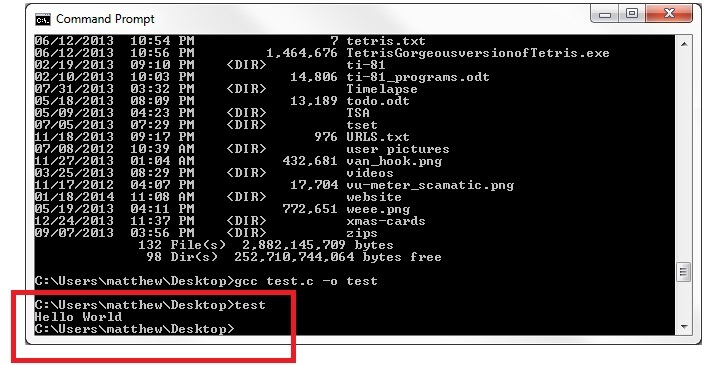

C ProgrammingLesson 1 - A Simple Program |
| <- Back to Main PageNext Lesson -> |
Before we can start programming, we need to decide what application we will do our programming in. Technically we can open a text editor and type in there. I wouldn't advise doing this in the future, but for our first example we will use one to get some concepts down.
|
Windows: * Open Notepad * Click File then Save As * Pull down the menu next to Save as type and click on All Files * Choose whatever folder you want to save your file in * In the File name box, type any file name you want ending with ".c" (EX: test.c) Mac OS X: * Open TextEdit * Click on Format then Make Plain Text * Click on File then Save As * Click the arrow next to the Save As box to show more information * Uncheck the check boxes next to: * Hide Extension * If no extension is provided use ".txt" * Choose whatever folder you want to save your file in * In the file name box, type any file name you want ending with ".c" (EX: test.c) * Leave the Plain Text Encoding alone * Click Save * If a warning appears about saving as a ".c" extension type click on the option that allows the user to save to ".c" Linux:I assume that if you are using linux, you will probably know how to open and create a text file. Since there are so many distributions out there, I am not going to make a step by step list. Chances are you have a program like Gedit or Pluma which can edit text documents just like Notepad or TextEdit. If you do not have a Graphical User Interface (GUI) than you will have to create a file and edit it through UNIX commands. For this information you can head over to my UNIX command reference and tutorial below: |
NOTE: You should try to keep capital letters, spaces, and characters other than - and _ out of filenames. This will keep you from getting errors in some situations.
Great! Now we are ready to start with our first program.
I would recommend typing what you see below verbatim. It will help you create your own programs in the future without having to look up or copy and paste the fundementals. Don't worry about what each section does yet, because that will be covered in the next section.
#include <stdio.h>
int main()
{
printf("Hello World");
return(0);
}
Once you have completed typing this, save your file. Now if you close the file you should be able to open it back up again and see the code you just typed. But how do you run it? Hold your horses, we still need to compile this program.
A compiler transforms source code written in a programming language into machine language which the computer can read. C is a very versatile language because of the compiling process that it goes through. Once it is compiled, it can run over and over at a much faster rate than other languages. The compiler we will be using in this example is GCC.
Windows:
The easiest way to install gcc in windows is to install MinGW. Click here to download. (WARNING: Will download after 5 seconds of clicking the link.) If you want to read about it first click here.
Mac OS X:
The GCC compiler should be downloaded on your mac by default. Open up terminal and type in gcc --help. If directions are not displayed you do not have GCC installed. If so you can download xcode which includes gcc from here. Or you can skip running this program and move to the next Lesson where we will install a program that contains all the necessary elements.
Linux:
Follow the same instructions that are listed under Mac OS X. If gcc is installed try looking here. Otherwise just search in Google "Install gcc linux".
Once your gcc compiler is installed then open up Command Prompt(Windows) or Terminal(Mac OS X and Linux).
Navigate to the folder your file is stored in. To see what files are in the directory you are in type "dir". In Mac OS X and Linux only, you can also type "ls". Move into directories within the current directory by typing "cd " and then the folder name. To move back a directory type "cd ..".
Once you are in the correct folder, type in the following replacing test with your filename:
gcc test.c -o testFor more information on gcc click here.
You have just created an executable file. This file should be located in the same folder that your c file is in. Either type "test" (Your filename without the .c extension) or double click the file that has just appeared in that folder. In Linux/Mac OS X you should type "./" infront of the filename like this: ./test. The output should look something like this:

You are done with this lesson! Click here to go to the next lesson.